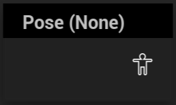

Pose by Name
Blends in a specific pose from a pose asset
GraphNode:
UAnimGraphNode_PoseByName
AnimNode:
FAnimNode_PoseByName

Outputs a pose from a pose asset based on the poses name.
If the pose asset does not have a name with that pose, it will instead output the reference pose, without warning that the pose asset does not contain that pose.
The Pose Weight blends the pose from the pose asset with the ref pose, 0 being ref pose and 1 being the pose assets pose.
This node does not appear in the node creation context menu, but rather can only be created via the right click menu of a Pose Blender node. This is documented in the nodes’ source code as intentional.